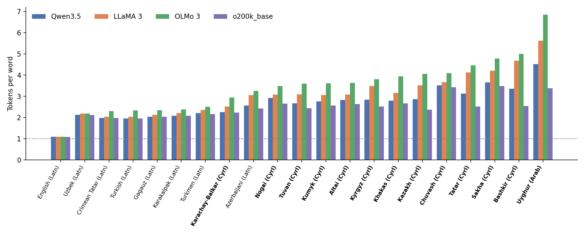

7 Neural Morphology and the Tokenisation Problem
After reading this chapter, you will be able to:
- Interpret tokeniser fertility under a stated sampling convention and explain its implications for model input length
- Compare BPE, WordPiece, and Unigram tokenisation algorithms and reason about their suitability for Turkic text
- Describe morpheme-aware tokenisation and design a comparison with a subword baseline
- Contrast character-level, classifier-based, and hybrid FST-constrained neural morphological analysers
- Explain the morphological disambiguation task and compare HMM, CRF, and transformer-based solutions
- Design an evaluation of zero-shot morphological transfer across the Turkic family, including native-script and transliterated conditions
Neural morphology involves two related tasks: representing word forms and choosing their analyses in context. This chapter first examines subword tokenisation, then neural tagging, disambiguation and transfer to languages without task-labelled training data.
7.1 Subword Tokenisation in Agglutinative Languages
7.1.1 Three Algorithms
Many neural NLP models operate on subword tokens learned from training text. An individual token may represent a whole word, part of a word, a character or bytes; character- and byte-level models also exist. Three common subword algorithms are described here.
Byte-Pair Encoding (BPE) (Sennrich, Haddow, and Birch 2016) begins with a character-level vocabulary and iteratively merges the most frequent adjacent pair of symbols. After a fixed number of merge operations, the resulting vocabulary covers frequent word forms as single tokens and decomposes rare forms into shorter pieces. BPE and its byte-level variants are used by many generative LLMs, among them the GPT model series and LLaMA 3.
WordPiece learns a vocabulary of reusable pieces. At inference, BERT tokenisers apply greedy longest-match segmentation within pretokenised words, using continuation markers such as ##; this differs from applying a ranked BPE merge list (BERT implementation). WordPiece is the tokeniser underlying BERT and its derivatives (Devlin et al. 2019), including BERTurk (Schweter 2020).
Unigram reverses the direction: it starts with a large initial vocabulary and iteratively removes the tokens whose removal hurts corpus likelihood least. SentencePiece (Kudo and Richardson 2018) is the library that popularised it; it implements both Unigram and BPE and operates on raw text without pre-tokenisation. mT5 and XLM-R (Conneau et al. 2020) use SentencePiece Unigram models, as does Glot500, which extends the XLM-R vocabulary; the SentencePiece model distributed with NLLB-200 is a BPE model (its model_type, checked 19 October 2026). LLaMA 1 and 2 used SentencePiece BPE, while LLaMA 3 switched to a byte-level BPE tokeniser of the tiktoken family.
All three algorithms can split rare, long suffix-chain forms into many pieces. Training data, sampling and vocabulary size determine the learned inventory. An English-heavy inventory reflects those choices, rather than an inherent property of the algorithm; monolingual Turkish tokenisers illustrate the difference. Fertility measures the extent of this splitting.
7.1.2 The Fertility Metric
Fertility is the mean number of subword tokens per input word. It equals 1.0 when a tokeniser assigns one token to each word, and the average word length for a character-level tokeniser. Two other measures help describe tokenisation: the share of words split into several tokens, and the 95th percentile of tokens per word. The latter captures the upper tail without relying on a single maximum. Here, words are Unicode alphanumeric runs matched by [^\W_]+, encoded separately without special tokens. This follows the protocol in Chapter 3; it differs from counting whitespace-separated words.
Table 7.1 and Figure 7.1 show measured fertility for four widely used LLM tokenisers on the same 20 parallel sentences in 20 Turkic languages and English (Hakimov 2026). All four tokenisers segment English at 1.08–1.09 tokens per word. Turkish needs between 1.95 (Qwen3.5 and o200k_base) and 2.33 (OLMo 3). For other languages the cost is considerably higher, although these languages share Turkish’s productive suffixation: 3.38 (o200k_base) to 6.85 (OLMo 3) for Uyghur, 3.48 to 4.78 for Sakha, and 2.54 to 5.00 for Bashkir. The 95th percentile reaches 11 tokens per word for Uyghur and Tatar under OLMo 3, compared with 2 for English under every tokeniser. Averaged over the 20 Turkic languages, o200k_base is the most efficient tokeniser (2.51), followed by Qwen3.5 (2.75), LLaMA 3 (3.16), and OLMo 3 (3.58).
| Language | Branch | Script | Qwen3.5 | LLaMA 3 | OLMo 3 | o200k_base |
|---|---|---|---|---|---|---|
| English (reference) | — | Latn | 1.09 | 1.09 | 1.09 | 1.08 |
| Turkish | Oghuz | Latn | 1.95 | 2.03 | 2.33 | 1.95 |
| Azerbaijani | Oghuz | Latn | 2.56 | 3.05 | 3.25 | 2.42 |
| Turkmen | Oghuz | Latn | 2.21 | 2.35 | 2.50 | 2.16 |
| Gagauz | Oghuz | Latn | 2.03 | 2.12 | 2.34 | 2.03 |
| Kazakh | Kipchak | Cyrl | 2.86 | 3.51 | 4.05 | 2.37 |
| Kyrgyz | Kipchak | Cyrl | 2.84 | 3.48 | 3.80 | 2.52 |
| Tatar | Kipchak | Cyrl | 3.13 | 4.13 | 4.46 | 2.51 |
| Bashkir | Kipchak | Cyrl | 3.35 | 4.68 | 5.00 | 2.54 |
| Crimean Tatar | Kipchak | Latn | 1.98 | 2.03 | 2.30 | 1.98 |
| Karakalpak | Kipchak | Latn | 2.08 | 2.21 | 2.38 | 2.08 |
| Nogai | Kipchak | Cyrl | 2.92 | 3.08 | 3.48 | 2.65 |
| Kumyk | Kipchak | Cyrl | 2.76 | 3.06 | 3.61 | 2.56 |
| Karachay-Balkar | Kipchak | Cyrl | 2.25 | 2.52 | 2.94 | 2.23 |
| Uzbek | Karluk | Latn | 2.12 | 2.18 | 2.18 | 2.11 |
| Uyghur | Karluk | Arab | 4.51 | 5.62 | 6.85 | 3.38 |
| Sakha | Siberian | Cyrl | 3.65 | 4.21 | 4.78 | 3.48 |
| Altai | Siberian | Cyrl | 2.83 | 3.08 | 3.63 | 2.63 |
| Tuvan | Siberian | Cyrl | 2.67 | 3.09 | 3.59 | 2.44 |
| Khakas | Siberian | Cyrl | 2.79 | 3.16 | 3.94 | 2.67 |
| Chuvash | Oghur | Cyrl | 3.52 | 3.66 | 4.09 | 3.42 |
The source files called the OpenAI column “GPT-5.2”, but the script measured the o200k_base encoding. The table uses the encoding name; it does not test a live model’s tokeniser (Section 3.6).

Script conversion changes the measured cost. Latin-script Crimean Tatar and Gagauz have fertility close to Turkish on this sample. Converting the Cyrillic- and Perso-Arabic-script samples to CTS substantially reduces the average gap (Section 3.6). This comparison concerns 20 short sentences per language and the tested mappings. Script and tokeniser training exposure remain confounded, and downstream gains are untested. Tokenising words in isolation also gives different counts from tokenising running text.
7.1.3 Token Cost and Morphological Boundaries
Token counts affect context capacity and computation. Boundary alignment raises a separate question about how explicitly the input represents morphology.
1. Context window depletion. Transformer models operate within a fixed context length measured in tokens, not words. Under OLMo 3, the least efficient of the four tokenisers, a 2,048-token window holds about 1,880 English words (1.09 tokens per word), about 880 Turkish words (2.33) and only about 300 Uyghur words (6.85) (Table 12.2 in Chapter 12 gives more values). These divisions are illustrative capacity estimates: running-text tokenisation, punctuation and special tokens change the actual number of words that fit.
2. Split morphemes. Frequency-based subwords are not designed to follow morpheme boundaries. A form such as Turkish geldiklerinden (“because they came”, gel-dik-ler-i-n-den) might be segmented as gel ##dik ##ler ##inden, which cuts correctly after the plural but lumps the possessive, the pronominal n and the ablative into one piece; other tokenisers cut through the middle of a suffix. The model must then reconstruct morphological structure from fragments that do not align with it. (The segmentation shown is illustrative; Exercise 2 measures real boundary agreement.)
The recurring sentences give a measured case. XLM-R splits Kazakh бейбітшілікті ‘peace-ACC’ into ▁бей біт шілік ті, with the accusative as its own piece, while Llama 3 splits it into eight byte-level pieces of one or two letters. For Uyghur ھارۋىسىنى ‘its cart (ACC)’, Llama 3 produces eight pieces, two of which are partial bytes of the letter ۋ. Converting to CTS changes the counts in opposite directions for the two tokenisers (Table 7.2).
| Sentence | Words | Llama 3, native | Llama 3, CTS | XLM-R, native | XLM-R, CTS |
|---|---|---|---|---|---|
| Kazakh | 5 | 32 | 20 | 11 | 19 |
| Kyrgyz | 3 | 7 | 8 | 5 | 7 |
| Uzbek | 7 | 32 | 24 | 21 | 20 |
| Uyghur | 7 | 40 | 17 | 13 | 14 |
Llama 3 needs fewer tokens after conversion for three of the four sentences. XLM-R, whose vocabulary was learned from native-script text, needs more for Kazakh and Kyrgyz. Four sentences show the mechanism; Table 7.1 measures it on a larger sample.
3. Inconsistent units across related forms. Frequency-based merges can segment the same suffix differently after different stems. Allomorphs such as -lar and -ler may also receive different token sequences. The model has to learn the grammatical connection between these sequences.
4. Inference latency and cost. More input tokens increase prefill work and consume context capacity; ordinary autoregressive generation then takes one decoding step per output token. Input tokens are not each separate decoding steps. At a fixed per-token price, twice as many billed tokens cost twice as much, but latency also depends on batching, caching, hardware and sequence length. Isolated-word fertility alone does not measure runtime or running-text billing.
7.2 Morpheme-Aware Tokenisation
7.2.1 Morphological Pre-Segmentation
One way to preserve morph boundaries is to segment words before applying the standard tokeniser. An FST (Chapter 6), neural segmenter or hybrid supplies the morphs: for example, evlerimizden → ev ler imiz den. BPE or Unigram then learns a vocabulary over these units, with a constraint that prevents tokens from crossing the supplied boundaries.
Pre-segmentation protects the supplied morph boundaries; it does not necessarily reduce token counts. With a fixed vocabulary, forbidding pieces that cross a boundary cannot lower the minimum possible count. Separately trained tokenisers learn different vocabularies, so their fertility must be measured.
A morph may still need several tokens, and a wrong boundary remains an error. Turkish studies report competitive results for morphology-level tokenisation (Toraman et al. 2023), but whether large generative models benefit in the same way is still open.
7.2.2 Vocabulary Size as a Lever
Increasing vocabulary size can reduce fertility by storing more word forms as single tokens. BERTurk (Schweter 2020) was released with 32K and 128K vocabularies. At a fixed embedding dimension, more entries require more embedding parameters. Compare token counts and downstream scores rather than assuming that a larger vocabulary is better. Exercise 1 measures tokenisation for the two BERTurk vocabularies.
7.2.3 Designing and Evaluating a Turkic Tokeniser
Designing a tokeniser for a new Turkic model involves three choices. Test each against the intended task.
- Script. Train on the native script(s), or on a shared representation such as the toolkit’s Common Turkic Script (CTS) (Section 3.6)? For a multilingual Turkic tokeniser, a shared script lets cognate stems and suffixes share vocabulary entries; the cost is a conversion step at input and output time and a representation whose pretraining coverage needs checking.
- Segmentation constraint. Unconstrained BPE/Unigram, morph-pre-segmented training as above, or a hybrid in which morph boundaries are preferred but not enforced.
- Vocabulary and sampling. A monolingual vocabulary (BERTurk’s base model, for comparison, has 32K entries) or one multilingual vocabulary; for the latter, temperature sampling over languages (Section 16.4) can reduce the imbalance in training exposure.
TurkicNLP’s MorphemeTokenizer supplies surface segments. The strict example below uses the same word-level segmenter for corpus preparation and inference. Run from the book root, with a supported TurkicNLP backend installed; load() may acquire neural resources. Record which backends loaded, rather than assuming an HFST-only run. The helpers in code/ch07-neural/boundary_tokenizer.py reject changed surface forms and reserved markers, and check decoding of token IDs, including byte fallback. Their whitespace sidecar preserves the original spacing; the point is to demonstrate boundaries, and the result is not a complete LM input format.
from pathlib import Path
import sys
import sentencepiece as spm
from turkicnlp.processors.morpheme_tokenizer import MorphemeTokenizer
sys.path.insert(0, "code/ch07-neural")
from boundary_tokenizer import BOUNDARY, training_lines, encode_text, decode_text
segmenter = MorphemeTokenizer(lang="kaz")
segmenter.load() # loads available HFST/neural backends; record which succeeded
segment_word = lambda word: segmenter.segment(word).segments
text = Path("kaz.txt").read_text(encoding="utf-8")
Path("kaz.seg.txt").write_text("\n".join(training_lines(text, segment_word)) + "\n", encoding="utf-8")
spm.SentencePieceTrainer.train(
input="kaz.seg.txt", model_prefix="kaz_morph", vocab_size=16000,
model_type="unigram", character_coverage=1.0, hard_vocab_limit=False,
user_defined_symbols=[BOUNDARY], byte_fallback=True,
normalization_rule_name="identity", remove_extra_whitespaces=False,
add_dummy_prefix=False,
)
sp = spm.SentencePieceProcessor(model_file="kaz_morph.model")
sample = "Мен мектептерімізде оқыдым"
encoded = encode_text(sample, sp, segment_word)
assert decode_text(encoded, sp) == sample
print(encoded)A user-defined │ marker is encoded separately. Identity normalisation prevents compatibility rewriting, while byte fallback covers characters absent from the training alphabet. Literal │ and SentencePiece’s ▁ in source words are rejected; an application needing them must define and test an escape convention. No piece may span the supplied boundary and decoding must reproduce the segmented surface. The SentencePiece training options document these settings.
The model needs a vocabulary large enough for its byte entries, characters and special symbols; increase the budget if training reports that it is too small. Report fertility including and excluding the inserted boundary tokens, and specify the whitespace representation. Preserve the model, training-data hashes, segmenter source and transducer hashes together. Toolkit corpus and pipeline wrappers can have different cleaning, pretokenisation or fallback behaviour; do not assume their output matches this contract without testing it. python code/ch07-neural/check_examples.py exercises the contract with a tiny trained SentencePiece model, synthetic boundaries, unseen Unicode characters and repeated whitespace. It checks mechanics; expert boundary accuracy is a separate evaluation (M2).
Evaluate any candidate tokeniser on held-out text with at least:
| Metric | What it measures |
|---|---|
| Fertility and split rate | Cost and context capacity (Section 7.1) |
| 95th-percentile tokens per word | Upper-tail fragmentation of long forms |
| Boundary precision/recall | Agreement with manually checked morph boundaries; unreviewed analyser output measures agreement with that analyser |
| Cross-lingual token overlap | Share of tokens used by more than one Turkic language (for multilingual tokenisers) |
| Downstream score | The task you actually care about — evaluated alongside cost and error types |
7.2.4 Choosing a Use Case
Morphological tagging and dependency parsing are useful tasks for testing pre-segmentation because their labels can depend on suffixes. Compare matched models with and without the segmentation step; supplied boundaries can be wrong, and more tokens can increase computation.
For an existing language model, replacing the tokeniser also changes its input vocabulary. Vocabulary extension is one adaptation option (Chapter 12). For a new model, compare tokenisation designs using Table 7.3. Where the segmenter has poor coverage, report its fallback behaviour and errors alongside downstream scores.
7.3 Neural Morphological Analysis
7.3.1 The Task and the Trade-Off
Morphological analysis predicts a lemma, part of speech and morphological features, as described in Chapter 5. FSTs use an explicit lexicon and rules (Chapter 6). Neural models learn from data and can generalise to forms absent from an FST lexicon; contextual models also use the surrounding sentence. Supervised training needs annotated examples, which may come from another language in a transfer setting. Both approaches can return wrong lemmas or features.
Two neural paradigms are currently in use, with a third hybrid approach combining their respective advantages.
7.3.2 Character-Level Sequence-to-Sequence Analysis
A character-based neural approach treats morphological analysis as a string transduction problem: the input is the character sequence of the surface form, and the output is the analysis string (lemma plus morphological tag sequence). An encoder-decoder architecture (an LSTM or a transformer, for example) learns this transduction from annotated data.
For example, the input character sequence g-e-l-d-i-k-l-e-r-i-n-d-e-n is transduced to an analysis string such as gel+VERB+VerbForm=Part|Number[psor]=Plur|Person[psor]=3+Case=Abl (one of its readings, Section 5.3). The model must learn to identify the stem (gel- “come”), to strip and identify each suffix layer, and to emit the correct tag sequence in the right format.
Character-level models can combine familiar stems and suffix patterns. A model trained on gittikleri and geldim, for example, may be able to analyse geldikleri. Both its stem and participial suffix pattern are familiar. But some surface forms allow several readings. A word-only model lacks the surrounding sentence needed to choose between them and may learn a preference that differs from the most frequent reading.
7.3.3 BERT-Based Morphological Tagging
A contextual tagger treats morphological analysis as sequence labelling. BERT-style embeddings let it use the surrounding sentence when choosing an analysis.
A standard token classifier first splits each word into subwords. It takes the first subword’s contextual BERT embedding as the word representation, then uses a linear head to predict a morphological feature bundle. Fine-tuning requires a morphologically annotated corpus, typically a Universal Dependencies treebank with complete features in the FEATS column.
The Hands-On section implements this BERT-style architecture. TurkishDelightNLP is a different neural design: its morphology/syntax model uses stacked LSTMs, and its morphological tagger combines character and word-context encoders (Alecakir, Bölücü, and Can 2022, 19–21). It should not be cited as a BERTurk token classifier.
7.3.4 Error Types of Neural Morphological Analysers
Evaluation should distinguish the following errors in neural and rule-based systems:
- Wrong contextual reading: a licensed analysis, but not the one the sentence requires (evi as possessive where the accusative is meant)
- Incompatible feature combination: a predicted bundle not licensed for the word’s category and construction. Check the annotation scheme: stacked voice markers and underspecified values can legitimately produce multiple values.
- Wrong lemma: a lemma that does not match the word, for example a stem cut at the wrong place
- Missing gold candidate (for FST-based systems): the correct analysis is not among the candidates at all
A lemma missing from a dictionary is not necessarily an error: it can be a valid new word. These errors can be invisible to surface-level evaluation, because a plausible but wrong analysis still looks like a valid analysis string.
7.3.5 Hybrid FST-Constrained Analysis
In a hybrid system, the FST supplies a candidate set of analyses for each word. A neural model reranks them using the surrounding sentence. It can select only from this set. The FST may overgenerate or omit the correct reading, so report candidate recall before reranker accuracy: how often does the set contain the gold analysis?
TurkicNLP’s rule-based backend follows this pattern in a simple form: Apertium FSTs provide candidates for 20 languages, and transducer weights plus heuristic scores (syntactic position, part-of-speech priority, question particles) select among them (Hakimov 2026). A learned reranker is a natural extension: fine-tune a model to score each (word-in-context, FST-candidate) pair and select the highest-scoring candidate, combining the grammar’s constraints with the model’s contextual sensitivity.
Which side should lead depends on the transducer. Where the FST is mature, it should generate the candidates; where it is a prototype with a small lexicon, a neural analyser may assign analyses to more words, whose correctness still needs checking (Table 6.1), and the FST is better used as a validator for the words it does know.
7.3.6 A Multilingual Neural Analyser for the Family
TurkicNLP uses one neural morphological analyser for 22 languages (Hakimov 2026). It fine-tunes the top three layers of Glot500 (Imani et al. 2023) and adds script-specific adapters (Latin, Cyrillic, Arabic), a language embedding and a shared two-layer BiLSTM. The outputs are UPOS, 69 UD feature–value pairs and lemmas represented as edit scripts.
Training draws on UD-format treebanks for ten languages (including silver treebanks for Azerbaijani, Turkmen and Bashkir), UniMorph paradigms for 13 languages (≈1.9 million entries) and Wiktionary paradigms for 20 languages (≈4.8 million forms). Temperature sampling (\(T=2\)) reduces the imbalance in language exposure. Paradigm tables provide supervision for languages that lack annotated running text.
Languages without a treebank use a related proxy language’s embedding: Turkish for Crimean Tatar, Gagauz and Khalaj; Bashkir for Sakha, Tuvan, Khakas, Altai and Chuvash; and Tatar for Kumyk. Their paradigm data also adapts the shared layers. Three further languages receive purely zero-shot coverage: Karakalpak uses Uzbek as its proxy, while Karachay-Balkar and Nogai use Tatar.
7.4 Morphological Disambiguation
7.4.1 The Task
Morphological disambiguation is the problem that motivates the hybrid approach. As established in Section 5.3, a single Turkic surface form may have several valid morphological analyses, because morphological categories overlap at the surface. In context, usually one analysis is intended, though genuine ambiguity and alternative annotation conventions also occur. Selecting the analysis is useful for parsing, NER and other downstream tasks, whether done explicitly or implicitly by the model.
On the UD 2.17 test samples and denominator defined in Section 5.3, 399/730 Turkish TueCL tokens (55%) and 5,071/7,667 Kazakh-KTB tokens (66%) have multiple readings even after removing all + continuations. The excluded continuation class is broader than copular readings. Exact counts and per-token outputs are in code/ch05-ambiguity/.
A representative example: among the readings of the Turkish form yüz are these three (the table illustrates selected readings, not all lexical senses):
| Analysis | Part of speech | Lemma | Meaning |
|---|---|---|---|
yüz<n><nom> |
N | yüz | face |
yüz<num> |
NUM | yüz | one hundred |
yüz<v><iv><imp><p2><sg> |
V | yüz- | swim! (2sg imperative) |
The same form yüz occurs in all three contexts: yüz metre (“one hundred metres”) selects the numeral; Havuzda yüz! (“Swim in the pool!”) selects the verb; güzel bir yüz (“a beautiful face”) selects the noun. Nothing inside the word itself resolves the ambiguity.
7.4.2 Classical Approaches
Hidden Markov Models (HMM) model the joint probability of a morphological tag sequence and the observed words:
\[P(\mathbf{t}, \mathbf{w}) = \prod_{i=1}^{n} P(t_i \mid t_{i-1}) \cdot P(w_i \mid t_i)\]
where \(t_i\) is the morphological tag at position \(i\) and \(w_i\) is the observed word. This is a first-order (bigram) model; the Viterbi algorithm recovers the most probable tag sequence in \(O(n \cdot |T|^2)\) time. Second-order (trigram) models condition on two previous tags. For Turkish, Hakkani-Tür, Oflazer, and Tür (2000) disambiguate with statistical models of this kind over sequences of inflectional groups. A separately documented statistical approach for Kazakh uses a voted perceptron with Viterbi decoding (Tolegen, Toleu, and Mussabayev 2020); it should not be labelled an HMM.
The limitation is the short history: the probability of tag \(t_i\) depends only on the previous one or two tags. In Turkic sentences, agreement and case government can disambiguate a form several words away.
Conditional Random Fields (CRF) model the conditional distribution \(P(\mathbf{t} \mid \mathbf{w})\) directly. A linear-chain CRF can use features of the whole input sequence (character n-grams of the current word to capture suffix patterns, surrounding words), while the dependence between output labels stays limited to neighbouring tags. These are two different axes: broad input context, local output structure.
7.4.3 Neural Approaches
BiLSTM-CRF replaces hand-crafted features with learned representations from a bidirectional LSTM, while retaining a CRF output layer for structured prediction over the tag sequence. The character-level BiLSTM is particularly valuable for Turkic: it encodes the morphological form of each word (vowel sequences, suffix patterns) as an implicit feature, allowing the model to generalise to unseen surface forms.
Transformer-based disambiguation uses a fine-tuned BERT model as the encoder. For each word in a sentence, the word’s contextual BERT embedding is passed through a linear classification head predicting the full morphological feature bundle. The Hands-On section uses this closed-bundle classifier; TurkishDelightNLP instead uses LSTM encoders and a tag decoder (Section 7.3). Both BiLSTMs and transformers can use context on either side of a word. Attention provides direct interactions within the input window; whether this improves disambiguation must be measured on the same data.
7.4.4 Evaluation
Morphological disambiguation is evaluated at two granularities, and the distinction is consequential.
Per-feature accuracy measures individual categories, such as case or tense. State how absent features and extra predictions are counted.
Full-bundle accuracy requires every feature on a word to match. It reveals errors hidden by individual feature scores, but excludes lemma and POS unless those are explicitly included.
The official UD evaluator reports UFeats for feature-bundle agreement and AllTags for joint UPOS, XPOS and feature agreement. Per-feature scores require a separate calculation. Report both bundle and per-feature results, with the scorer version and word-alignment policy. Which errors matter for a parser or another application only downstream evaluation can tell.
7.5 Zero-Shot Morphological Tagging for Unseen Languages
7.5.1 Setup and Motivation
For a target language without task-labelled training data, zero-shot transfer offers a baseline. Check treebanks and paradigm resources separately before asserting that a language has no morphological annotation. Shared categories such as case, number, person and tense motivate transfer from Turkish or Kazakh. Their forms, ordering and annotation still differ across languages, so transfer quality needs testing (Chapter 5).
The zero-shot morphological transfer setup is:
- Train a morphological tagger (BERT-based or BiLSTM) on a language with annotated data (typically Turkish or Kazakh)
- Apply the tagger to a related language with no annotated data, without fine-tuning
Shared morphological patterns motivate testing transfer within the Turkic family against transfer across families. Two findings are relevant, though they concern different tasks. Kardeş-NLU reports improved sentence-level transfer to Azerbaijani, Kazakh, Kyrgyz, Uzbek and Uyghur when Turkish serves as a high-resource relative (Senel et al. 2024).
For morphology, TurkicNLP’s multilingual analyser covers three languages without task-labelled or paradigm training data. On the parallel challenge set, it detects the target feature in 50% of Karakalpak sentences, 55% of Nogai sentences and 70% of Karachay-Balkar sentences. It assigns some feature to 86–97% of their content words (Hakimov 2026). Those coverage figures count non-empty bundles, including potentially incorrect ones. Here, zero-shot refers to the absence of target-language task-labelled training data; Glot500’s pretraining text may still contain these languages.
7.5.2 The Script Barrier
Before applying a monolingual model such as BERTurk to Cyrillic Kyrgyz, check its tokenisation and task performance: the scripts share little of its subword vocabulary. A multilingual encoder pretrained on both scripts can support cross-script transfer, as the Glot500-based analyser above illustrates. Transliteration offers another option (Chapter 3). Converting Kyrgyz Cyrillic into CTS with the specified toolkit mapping increases shared spelling, but changes the input relative to the model’s pretraining text.
Compare, rather than assume:
Compare native-script multilingual transfer with a specified transliteration pipeline. Shared spelling can increase token overlap, yet more overlap and lower fertility need not translate into better tagging.
Evaluate the same target test items with native-script multilingual input, transliterated input and a target-supervised model. Treat the supervised model as a baseline whose advantage also needs to be measured.
7.5.3 Questions for a Transfer Evaluation
Table 7.5 turns the linguistic comparisons into evaluation questions. Shared categories motivate testing transfer; they do not predict its accuracy. Exercise 6 tests these questions.
| Feature | Question | Basis |
|---|---|---|
| Noun case (Nom, Acc, Dat, Loc, Abl, Gen) | Does accuracy differ for shared and target-specific cases? | Cognate affixes in most languages; Sakha lacks the genitive and has partitive, comitative and comparative forms (Johanson 2021, 463, 477–78) |
| Number (Sing / Plur) | Does the model recognise different plural markers? | -lAr or cognates in many languages; Chuvash -сем is a counterexample (Johanson 2021, 453) |
| Verbal person agreement | Which agreement forms transfer? | Cognate agreement suffixes, two paradigms (Section 5.1) |
| Tense and aspect | How are auxiliary constructions handled? | Core categories shared; analytic aspect constructions differ |
| Voice (passive, causative, reflexive) | Which suffix patterns cause errors? | Present in all branches; formation varies |
| Derivational categories | Does the source label inventory cover the target? | Productivity and lexicalisation vary |
7.5.4 What Requires Language-Specific Annotation
A closed classifier can only emit labels included in its output inventory, regardless of script normalisation.
Language-specific grammatical categories. A closed classifier cannot emit labels absent from its output inventory. A Turkish-only case inventory, for example, omits Sakha’s partitive, comitative and comparative cases (Johanson 2021, 477–78). Chuvash’s possessive–plural order presents a different problem: the model must handle a different sequence of markers, even when the output labels are familiar (Section 5.4.5).
Uzbek surface forms. Uzbek suffix vowels are largely fixed (Section 2.2), so Uzbek has -da and -lar where Turkish alternates -da/-de, -lar/-ler. UD labels do not encode allomorphs, but the changed input strings can still affect a Turkish-trained tagger. They also matter for surface generation.
Language-specific derivational productivity. Some derivational morphemes are highly productive in one language but lexicalised (non-compositional) in another. A tagger trained on Turkish cannot infer from its training data which derivational morphemes are productive in Kyrgyz.
Zero-shot transfer can supply an initial analysis of the shared inflectional patterns, useful, for example, for pre-annotating text before human correction. Measure its quality separately for each language. To adapt the model to language-specific features, consider paradigm tables from UniMorph or Wiktionary and a small amount of annotated running text.
7.6 Hands-On: A Fine-Tuning Procedure for Morphological Tagging with BERTurk
Question. Can a word-level classifier predict UPOS and complete feature bundles?
Inputs. Official Turkish UD splits, BERTurk and the training recipe below.
Compute. Model downloads and training memory are required; a GPU is useful for the full fine-tuning run.
Output. A saved tagger, per-word predictions, unseen-bundle counts and development/test scores.
Interpretation. Compare against the supplied analysers on the same words and retain unseen labels in the denominator.
This tutorial fine-tunes BERTurk for morphological feature prediction on Turkish UD data. Morphological tagging is framed as token classification: for each word, predict one composite label combining UPOS and the full feature bundle. A closed label set has a consequence the tutorial makes explicit: a bundle that never occurs in training cannot be predicted, and such words must still be scored as errors.
7.6.1 Setup and Data
Run from the book root. Use the official train/dev/test files of UD 2.17 Turkish-IMST without reshuffling sentences. Set UD_IMST_DIR to that release’s UD_Turkish-IMST directory. The encoder and tokeniser are pinned to the same Hugging Face revision. The complete code is also in code/ch07-neural/fine_tune.py.
# pip install "transformers==5.3.0" "torch==2.10.0" "accelerate==1.12.0"
from pathlib import Path
import hashlib, importlib.metadata, json, os, sys
import torch
from transformers import (AutoTokenizer, AutoModelForTokenClassification, TrainingArguments,
Trainer, DataCollatorForTokenClassification, set_seed)
sys.path.insert(0, "code/ch07-neural")
from morph_tagging import (load_conllu, training_rows, predict_words,
score_predictions, export_conllu)
SEED, MAX_LEN = 13, 512
set_seed(SEED)
MODEL_NAME = "dbmdz/bert-base-turkish-cased"
MODEL_REVISION = "b6e1de16c983e0f2c70664591ea3f22810072608"
data_dir = Path(os.environ["UD_IMST_DIR"])
paths = {split: data_dir / f"tr_imst-ud-{split}.conllu" for split in ["train", "dev", "test"]}
train_sents, train_labels = load_conllu(paths["train"])
dev_sents, dev_labels = load_conllu(paths["dev"])
test_sents, test_labels = load_conllu(paths["test"])The reader uses integer-ID syntactic words, skipping multiword-token headers and empty nodes. Feature attributes and multivalued features are sorted before constructing a label, so equivalent FEATS strings have the same class. Punctuation remains in this evaluation’s denominator, unlike the ambiguity diagnostic in Section 5.3.
7.6.2 Tokenising without Losing Words
Only the first subword of each word receives a training label. Special tokens and continuation pieces receive -100. The label vocabulary comes from training data alone. Long sentences are partitioned into non-overlapping chunks at whole-word boundaries, with special tokens included in the length check. Every word appears exactly once; a word too long to fit by itself raises an error. This loses context across chunk boundaries, which should be reported, but does not silently discard evaluation words.
tokenizer = AutoTokenizer.from_pretrained(MODEL_NAME, revision=MODEL_REVISION, use_fast=True)
all_labels = sorted({label for sent in train_labels for label in sent})
label2id = {label: i for i, label in enumerate(all_labels)}
id2label = {i: label for label, i in label2id.items()}
train_dataset = training_rows(train_sents, train_labels, tokenizer, label2id, MAX_LEN)
assert sum(sum(label != -100 for label in row["labels"]) for row in train_dataset) == sum(map(len, train_sents))
print(f"training sentences: {len(train_sents)}; chunks: {len(train_dataset)}")7.6.3 Fine-Tuning
This baseline uses a fixed five-epoch budget and saves the final checkpoint. Development data are scored with the same all-word metric as test data; they are not passed through a loss that masks unknown gold classes. This avoids undefined losses on batches containing only unseen bundles. To select a checkpoint or tune hyperparameters, use development accuracy and freeze the choice before opening test results.
model = AutoModelForTokenClassification.from_pretrained(
MODEL_NAME, revision=MODEL_REVISION, num_labels=len(label2id),
id2label=id2label, label2id=label2id)
training_args = TrainingArguments(
output_dir="berturk-morph-tagger", num_train_epochs=5, seed=SEED,
per_device_train_batch_size=16, learning_rate=2e-5, warmup_ratio=0.1,
eval_strategy="no", save_strategy="no", report_to="none",
)
trainer = Trainer(model=model, args=training_args, train_dataset=train_dataset,
processing_class=tokenizer,
data_collator=DataCollatorForTokenClassification(tokenizer))
trainer.train()
trainer.save_model("berturk-morph-tagger/final")
tokenizer.save_pretrained("berturk-morph-tagger/final")7.6.4 Inference, Scoring and Export
Inference uses the same chunking function, the model’s actual device and evaluation mode. The scorer checks sentence and word counts instead of silently shortening mismatched lists with zip. Every gold word contributes: a class absent from training necessarily counts as an error.
results = {}
for split, sents, labels in [("dev", dev_sents, dev_labels), ("test", test_sents, test_labels)]:
predictions = [predict_words(words, model, tokenizer, id2label, MAX_LEN) for words in sents]
results[split] = score_predictions(predictions, labels, label2id)
export_conllu(paths[split], predictions, f"berturk-morph-tagger/{split}.conllu")
print(split, results[split])
manifest = {
"ud_release": "2.17", "model": MODEL_NAME, "revision": MODEL_REVISION,
"seed": SEED, "max_length": MAX_LEN, "epochs": 5,
"checkpoint_policy": "fixed final epoch; no selection on test",
"data_sha256": {split: hashlib.sha256(path.read_bytes()).hexdigest() for split, path in paths.items()},
"versions": {name: importlib.metadata.version(name) for name in ["torch", "transformers", "accelerate"]},
"training_sentences": len(train_sents), "training_chunks": len(train_dataset),
"scores": results,
}
Path("berturk-morph-tagger/run.json").write_text(json.dumps(manifest, indent=2) + "\n")The score is exact UPOS+FEATS agreement, excluding lemma and XPOS. The export preserves CoNLL-U comments, multiword-token rows and empty nodes, replacing only UPOS/FEATS on integer-ID rows. Its other fields remain source annotations, so use the official UD evaluator’s UPOS and UFeats scores; do not report its lemma, parsing or AllTags outputs as this model’s predictions.
The pinned tokeniser was also checked on the local UD 2.17 IMST release: all 37,522 training, 10,542 development and 10,032 test words retain alignment. There are 981 training labels, with 79 development and 112 test words whose gold composite labels are absent from training (code/ch07-neural/ud-alignment.json). No sentence in this release exceeds 512 tokens; synthetic long sentences exercise the overflow branch. These counts describe the release snapshot and are not tagging scores.
The helper checks exercise loss masking, word-preserving overflow, a tiny random BERT training step, inference, unseen labels and CoNLL-U export. For the full tutorial, fix a training budget, save the complete manifest and report development and test scores.
Compare the fine-tuned tagger with the two analysers that TurkicNLP ships, the Apertium transducer and the multilingual Glot500 analyser:
import turkicnlp
for proc in ["morph", "morph_neural"]:
nlp = turkicnlp.Pipeline("tur", processors=["tokenize", proc], tokenize_backend="rule")
for w in nlp("Ali kitabı dün okudu.").words:
print(f"{proc:<13} {w.text:<8} {w.upos or '_':<6} {w.feats or '_'}")This model can then be applied without further training to Azerbaijani or other Latin-script Oghuz languages as a zero-shot morphological tagger (Section 7.5); Exercise 6 asks you to measure how well that works.
To tag Kazakh text with the same architecture, substitute dbmdz/bert-base-turkish-cased with a Kazakh or multilingual encoder and train only on the Kazakh KTB training split. Keep its test set out of training and model selection (Chapter 8). For zero-shot transfer to Kyrgyz or Uzbek, compare native-script input to a multilingual encoder with transliterated input (Section 7.5); do not assume that either is better.
Status: procedure only. The full BERTurk fine-tuning run is not reported here; the mechanics checks and the separate exercise baselines are described above.
What to Take Forward
Subword tokenisation sets a model’s input units; morphological analysis predicts linguistic structure. The fertility comparison in Table 7.1 shows how token counts vary across the sampled languages and tokenisers. Use fertility and boundary agreement as diagnostics, then choose a tokeniser using downstream performance, context use and computational cost. Evaluate an analyser’s overall performance and report unseen bundles separately. Chapter 8 moves from the word to the sentence, where morphology and position together signal dependency structure.
Further Reading
Tokeniser fertility is measured across 20 Turkic languages and four LLM tokenisers, in native scripts and in CTS, by Hakimov (2026). Rust et al. (2021) and Petrov et al. (2023) analyse tokeniser quality and the resulting cost disparities across languages more generally; Toraman et al. (2023) compare tokenisation granularities for Turkish language models. Schweter (2020) describes BERTurk and its 32K and 128K vocabularies.
The SentencePiece paper (Kudo and Richardson 2018) describes the library; the Unigram algorithm it implements was introduced by Kudo (2018). For Turkish NLP more broadly, Oflazer and Saraçlar (2018) covers morphological analysis and disambiguation (chapters 2–3), parsing and language modelling. The TurkishDelightNLP system (Alecakir, Bölücü, and Can 2022) demonstrates joint LSTM-based morphological and syntactic processing for Turkish.
For multilingual morphological analysis across the family, including zero-shot languages, see Hakimov (2026); Glot500 is described by Imani et al. (2023). For sentence-level transfer with Turkish as a high-resource relative, see Kardeş-NLU (Senel et al. 2024). Chapter 16 extends the treatment to the full cross-lingual transfer methodology.
Exercises
Fertility audit. Take a Turkish news article of at least 500 words and tokenise it with
dbmdz/bert-base-turkish-cased(32K),dbmdz/bert-base-turkish-128k-cased(128K) andxlm-roberta-base, without special tokens. Compute fertility twice: words tokenised one at a time, and running text (tokens of the whole text divided by its words). State how you count words and punctuation. What proportion of words are single tokens? What is the 95th-percentile tokens per word?Boundary agreement. For a Turkish word, obtain morph boundaries (from the TurkicNLP segmenter or Zemberek) and token boundaries (from a tokeniser), both as character offsets. Automatically supplied morph boundaries measure agreement with that analyser; manually check them before treating them as gold. Count two different errors separately: a token that spans a morph boundary (a morph boundary falls inside a token), and a morph split by a token boundary (a token boundary falls inside a morph). Apply the script to the 100 most frequent nouns of a corpus and report both rates for each tokeniser.
Disambiguation in context. The Turkish form yüz has three readings in Table 7.4. Collect at least 60 sentences per reading containing the bare form yüz (from several documents), and split them by document into 40 training, 10 development and 10 test sentences per reading. Fine-tune a Turkish BERT classifier. What accuracy does it achieve on the test set? Which contextual cues (a following noun, a preceding adjective, sentence-final position) signal each reading?
Constrained FST reranking. Implement the hybrid FST-constrained neural approach described in Section 7.3. For a Turkish sentence, retrieve the Apertium FST candidates for each word (with
analyser.lookup(word)on the transducer that TurkicNLP downloads, as in Section 6.3). For each candidate, embed the tag string as a character sequence and concatenate with the word’s BERT contextual embedding. Train a linear classifier to select among candidates. First report candidate recall (how often the gold analysis is among the candidates), then compare full-bundle accuracy against (a) always taking the FST’s first analysis, and (b) the unconstrained BERT tagger from the Hands-On section.Glot500 as a baseline. Compare TurkicNLP’s
morph_neuralanalyser and the BERTurk tagger on the IMST test set. Supply the same gold word boundaries where supported; otherwise use an explicit alignment policy and report segmentation errors and unmatched words. Score UPOS and the full feature bundle under the same convention. How does a multilingual analyser serving 22 languages compare with the monolingual tagger? On which features does each win?Zero-shot transfer evaluation. Apply the BERTurk tagger from the Hands-On section to the whole Azerbaijani TueCL UD test set (Akhundjanova et al. 2025), which translates the same sentences as the Turkish TueCL set; note whether any of those Turkish sentences were used during development. Report full-bundle accuracy and per-feature accuracy by category, and check whether the two treebanks annotate the same features in the same way. Which categories transfer best? What do the results show for the questions in Table 7.5?